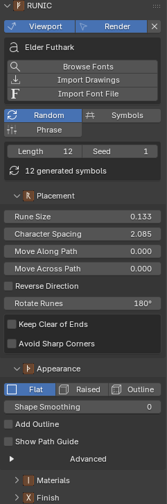
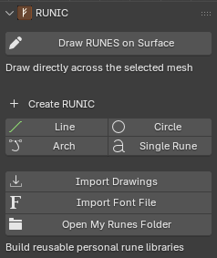
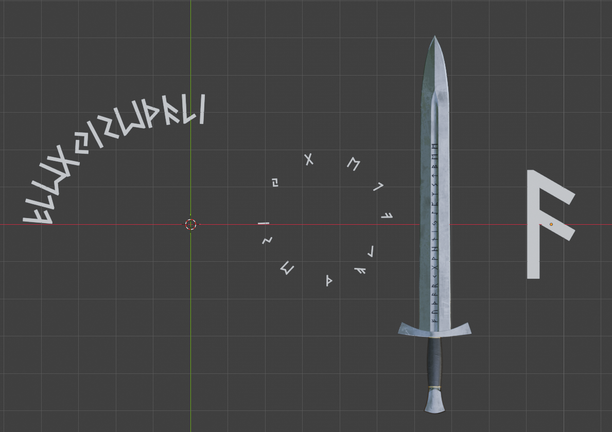
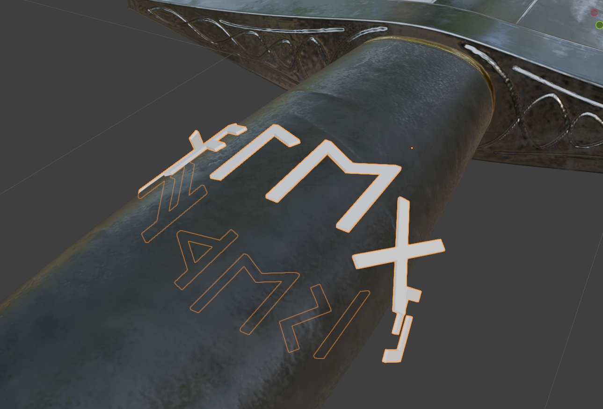
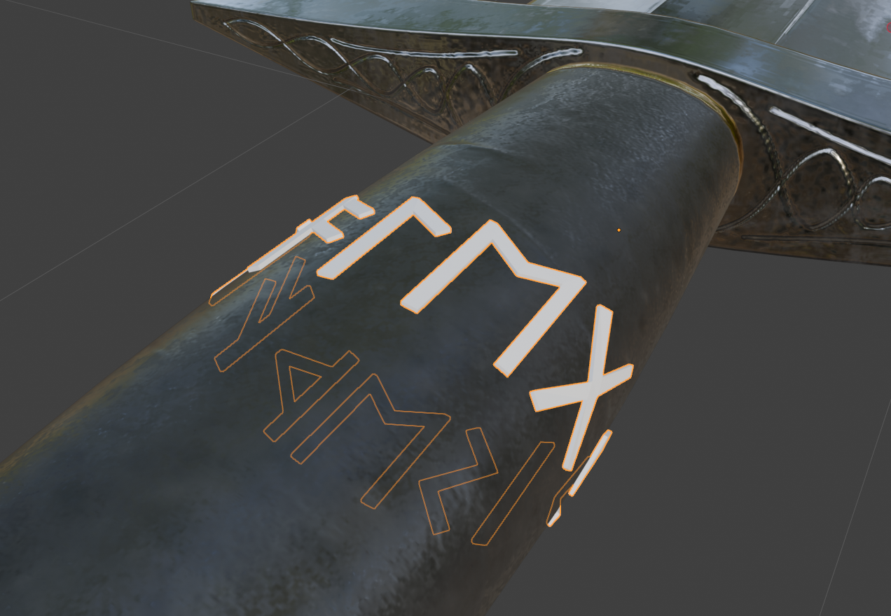
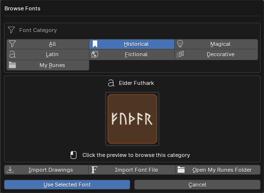
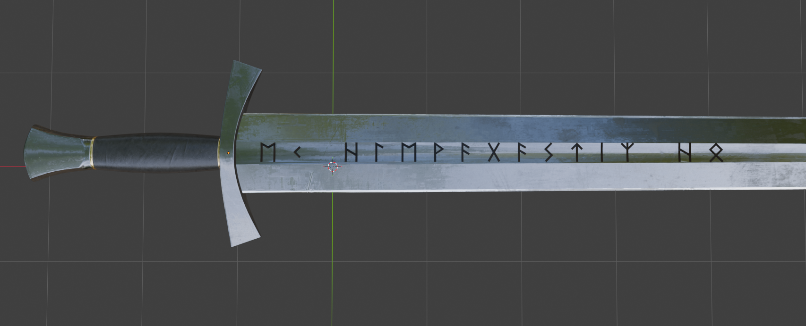
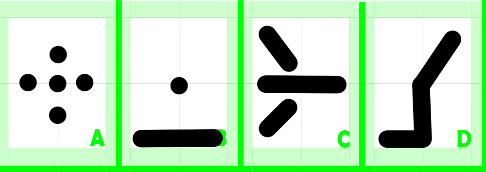

RUNIC — User Guide¶
RUNIC creates editable lettering, runes, symbols, and decorative marks in Blender. Its generated geometry is controlled by Geometry Nodes, while the original curve or object remains available for further editing.
Installation¶
- Download the RUNIC release ZIP.
- Leave the ZIP intact; do not extract or rearrange its contents.
- In Blender, open Edit → Preferences → Get Extensions.
- Open the menu in the upper-right corner and choose Install from Disk.
- Select the RUNIC ZIP and enable RUNIC if Blender does not do so automatically.
How RUNIC works¶
RUNIC starts from a curve, generated path, point object, selected mesh faces or edges, or a path drawn on a surface. It places font glyphs on that starting geometry and keeps the placement, text, and geometry controls available in the RUNIC panels.
The normal order of work is:
- Create or select a path, object, or mesh selection.
- Choose a font and text source.
- Set placement and appearance.
- Assign materials or generate UVs if needed.
- Keep the RUNIC object editable, or create a separate finished mesh when the design is ready.

Creating RUNIC objects¶

Existing curve¶
Select a curve and click Add RUNIC to Selected Curve. The selected curve remains editable, including its multiple splines and closed paths.
Line, Circle, Arch, and Single Rune¶
When no curve is selected, use a RUNIC preset:
- Line creates a straight editable path.
- Circle creates a closed circular path that can fill its circumference with symbols.
- Arch creates an editable curved path.
- Single Rune creates one editable point without a curve.

Selected mesh edges¶
In Edit Mode, select one or more edges and click RUNES along Selected Edges. RUNIC creates an editable curve path from the edge selection.
Selected mesh faces¶
In Edit Mode, switch to Face Select, select one or more faces, and click RUNES on Selected Faces. RUNIC creates one editable rune object with one placement point per selected face.
Use Fixed for one consistent rune size, or Fit Faces to scale each rune inside its face. Face Margin, Rotate Rune, and Surface Offset refine the result.
Drawing on a mesh surface¶
Select a mesh in Object Mode and choose Draw RUNES on Surface to enter curve drawing mode.
RUNIC creates a curve path and uses the mesh as its surface target. For an existing curve and mesh, select exactly one of each and use Add RUNIC to Curve on Surface or Attach to Selected Surface.
Surface placement has two modes:
- Clean keeps each rune rigid while placing it against the surface. It is generally the clearest choice for hard-surface objects.
- Wrap bends rune points to follow the target more closely. It suits smoother organic forms but can distort symbols on tight or uneven geometry.


Use Change Surface to choose another target or Detach from Surface to remove surface attachment.
Fonts and text sources¶
Choosing a font¶
Click Browse Fonts to open the font browser. The bundled library is organized into:
- Historical
- Magical
- Latin
- Fictional
- Decorative
- My Runes for your imported libraries
Each font has its own preview card. Choose a font before setting up text or symbol content.

Random¶
Random fills the selected path or object with valid symbols from the selected font. Set a Seed to make an arrangement repeatable; change the seed to generate a different arrangement.
The available placement points limit how many symbols can be placed. A Single Rune object or one-face rune object receives one symbol.
Text¶
Text uses characters supported by the selected font. If the normal text option is unavailable, the font may be a symbols-only library rather than a conventional alphabet.
Symbols¶
Symbols lets you select individual glyphs from the font browser. The gallery is based on the font's character map.
{kind=link}
Phrase¶
Some fonts include prepared phrase sets. Choose a phrase from the Phrase Bank and RUNIC converts it to the associated font symbols.
Phrase mode is unavailable for a Single Rune object, a face-rune object with one selected face, or a font without a phrase set.
Placement controls¶
Paths and edges¶
Use these controls to arrange runes along a curve or selected edges:
- Rune Size controls overall scale.
- Character Spacing adjusts the gap between glyphs.
- Word Spacing adjusts the gap between words.
- Move Along Path moves the whole arrangement along the path.
- Move Across Path moves runes sideways from the path.
- Reverse Direction flips the reading direction.
- Rotate Runes rotates the runes around the path.
- Keep Clear of Ends reserves empty space at open-path ends.
- Avoid Sharp Corners reduces crowding around sharp corners.
- Fill Closed Paths distributes the result around a cyclic curve.
Show Path Guide displays temporary viewport-only guide points. They are not rendered, exported, or retained when the modifier is applied.
Single Rune¶
Single Rune uses a procedural mesh point rather than a curve. Move, rotate, or scale its object using Blender's normal transform tools. Phrase mode is unavailable because it has one placement point.
Appearance and geometry¶
Choose an appearance in the RUNIC panels:
- Flat creates a flat filled result.
- Raised creates closed geometry with depth.
- Outline creates an outline without a filled body.
Surface workflows use Filled and Outline labels because the surface supplies the base.
Repair and smoothing¶
If raised, outlined, or bevelled geometry shows artifacts around sharp turns, corners, thin strokes, or overlapping details, open Appearance → Advanced → Font Repair. Start with the lightest repair mode that removes the visible problem:
- Reduce bevel or outline width if fine details collapse.
- Increase segments gradually when curves look faceted.
- Use Clean rather than Wrap if surface symbols become visibly distorted.
{kind=link}
{kind=link}
Materials, UVs, and finished meshes¶
The Materials panel can assign separate materials to:
- Faces for front or base rune faces.
- Sides for raised or surface side walls.
- Outline for outline geometry.
If a side or outline material is empty, RUNIC reuses the face material.
The Finish panel includes:
- Generate UV Map to create and pack UVs for texturing or export.
- UV Margin to control space between packed UV islands.
- Create Finished Mesh to make a separate ordinary mesh copy while leaving the original RUNIC object editable.
- Remove RUNIC to remove RUNIC's procedural setup while keeping the original editable object in the scene. This does not create a finished mesh copy.

Personal libraries¶
Importing a font¶
Choose Import Font File and select an OTF or TTF font. RUNIC inspects its character map and opens a review gallery.
Use the review gallery to choose whether the library should provide Text + Symbols or Symbols Only, select the glyphs you need, and save the result as a reusable entry under My Runes.
Importing hand-drawn symbols¶
Choose Import Drawings and select a PNG, JPG, JPEG, TIFF, or TIF image. The review workflow can treat the image as one rune, find separate marks automatically, or divide a regular sheet into rows and columns.
Use the controls to invert artwork, adjust threshold and speck cleanup, join gaps, set padding and cell edges, control tracing detail, and approve or ignore detected runes. RUNIC turns the approved drawings into vector contours and stores them as a reusable personal library.
For a regular sheet like this example, choose Even Grid and set the number of rows and columns. Separate dots and strokes within a cell remain part of the same rune.

{kind=link}
Troubleshooting and support¶
For common problems, see the RUNIC FAQ.
When reporting a problem, include your Blender version, RUNIC version, operating system, the path or object workflow you used, exact reproduction steps, and the full error message or a screenshot.